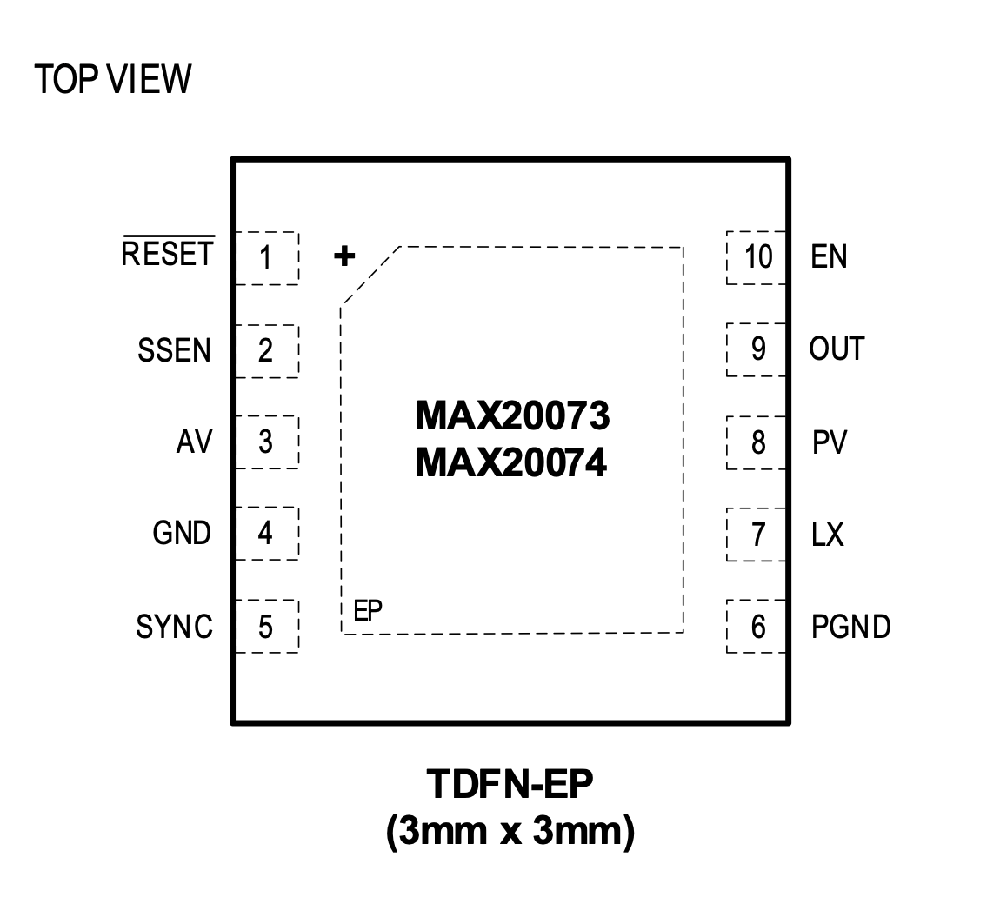

MAX20073 / MAX20074

Pin Description
| PIN | NAME | FUNCTION |
|---|---|---|
| 1 | RESET | Active-Low Open-Drain RESET Output. External pull-up resistor required if used. |
| 2 | SSEN | Spread-Spectrum Enable. Drive SSEN high for spread-spectrum operation. |
| 3 | AV | Analog Voltage Supply. Connect a 1.0μF ceramic capacitor from AV to GND. Connect AV to PV with a 10Ω resistor. |
| 4 | GND | Analog Ground |
| 5 | SYNC | SYNC I/O. When configured as an input, connect SYNC to GND or leave unconnected to enable skip mode operation under light loads. Connect SYNC to AV or an external clock to enable fixed-frequency FPWM mode operation. When configured as an output, connect SYNC to other device’s SYNC inputs. |
| 6 | PGND | Power Ground |
| 7 | LX | Inductor Connection. Connect LX to the switched side of the inductor. |
| 8 | PV | Power Input-Voltage Supply. Connect a 4.7μF or larger ceramic capacitor from PV to PGND. |
| 9 | OUT | Feedback Input. Connect an external resistive divider from the converter’s output to OUT and GND to set the output voltage. Connect to the output capacitor when configured as a fixed-output device. |
| 10 | EN | Active-High Enable Input. Drive EN high for normal operation. On the rising edge, the device enters soft- start; on the falling edge, the device turns off. |
| - | EP | Exposed Pad. Internally connected to GND. Connect to a large ground plane to maximize thermal performance. Not intended as an electrical connection point. |